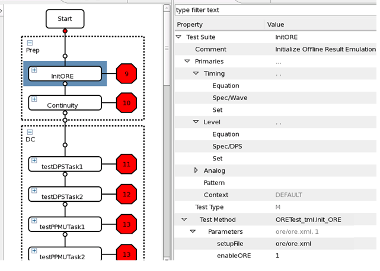

Activating offline result emulation in the testflow
This topic describes how to activate offline result emulation using the Flow Sequence Editor.
Before you begin
The setup meets the requirements according to Test program requirements for ORE.
Note Offline result emulation (ORE) is available with the
S&S_TOOLS_PACKAGE SW license. If this license is not available, ORE is
disabled.
For an overview of all licensed V93000 products by product ID, as they are referenced on the Entitlement Certificates, see Licensed V93000 products.
Procedure
Results
The testflow is prepared for the offline result emulation.
Example

Functional changes
- Introduced in SmarTest 7.1.3